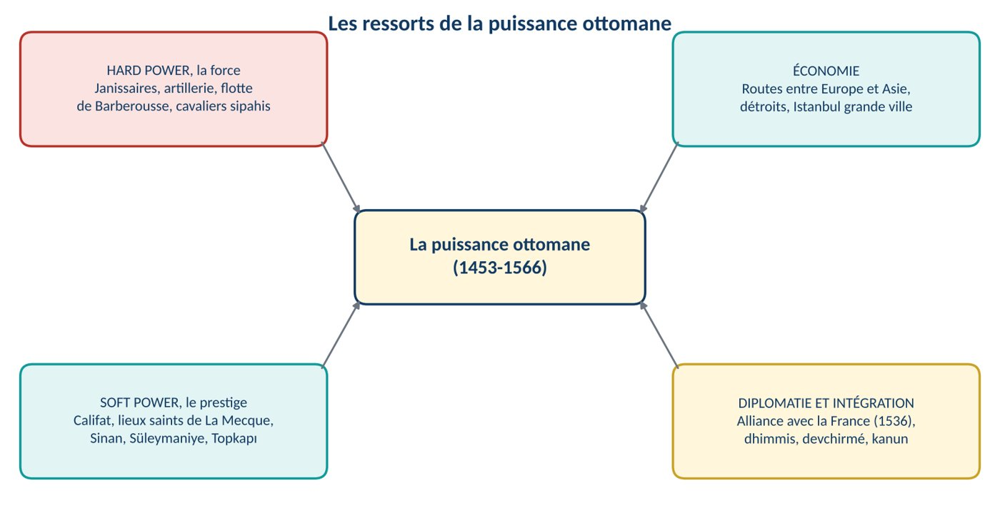
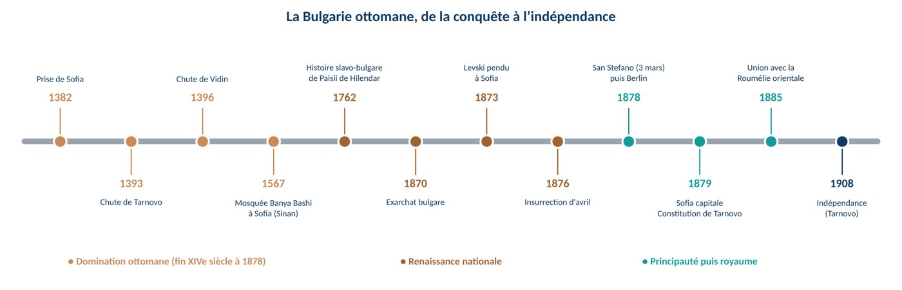
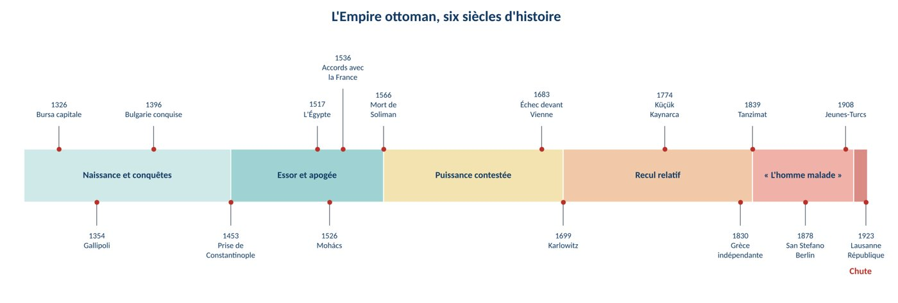

Espace professeur
Mode professeur activé. Toutes les étapes sont ouvertes et tous les corrigés sont visibles, ce qui permet de projeter le parcours en classe.
Suivi des élèves. À la fin du parcours, chaque élève envoie son bilan (scores, réponses, introduction rédigée). Il arrive sur laclassedegreg@gmail.com, avec le nom de l'élève dans l'objet du mail.
Les trois cours (essor, déclin, méthodologie) sont en téléchargement libre pour les élèves, dans l'étape « Les cours ».
La classe
Pour quitter le mode professeur, utilise le bouton « Changer d'utilisateur » en bas de page.

L'Empire ottoman, de l'essor au déclin (1453-1923)
Ton parcours
- Le jeu d'entrée, Ottoman ou pas ?
- Le cours 1, l'essor, avec une vidéo
- La galerie, des images à analyser
- Le cours 2, le déclin, avec une vidéo
- Le dossier Bulgarie ottomane
- Le jeu du Grand Vizir
- La frise à remettre dans l'ordre
- L'atelier, une introduction niveau Sciences Po
- Les trois cours à télécharger et à imprimer
- Ton bilan et ton firman de fin de parcours
Tu peux circuler librement entre les étapes avec le menu, ta progression est gardée sur cet appareil. Le parcours fonctionne sur ordinateur, tablette et téléphone.
Ottoman ou pas ?
Score 0 / 11

La nuit où les bateaux ont traversé la terre
Printemps 1453. Constantinople, la ville la plus riche de la chrétienté, est la capitale de l'Empire byzantin depuis plus de mille ans. Elle est protégée par trois rangées de murailles et, du côté de la mer, par une énorme chaîne de fer tendue à l'entrée de la Corne d'Or, le port de la ville.
En face, un sultan de 21 ans, Mehmed II. Ses conseillers le trouvent trop jeune, trop pressé. Lui a un plan.
D'abord, un canon. Un ingénieur hongrois nommé Urbain lui propose une pièce d'artillerie géante, capable de lancer des boulets de plusieurs centaines de kilos.
Ensuite, la chaîne. Elle bloque la flotte ottomane. Alors Mehmed fait une chose folle. Il fait construire une route de rondins graissés sur la colline de Galata et, en une nuit, des dizaines de navires sont tirés par des bœufs et des hommes à travers la terre ferme, puis remis à l'eau dans la Corne d'Or, derrière la chaîne. Au matin, les Byzantins découvrent la flotte ennemie au cœur de leur port.
Le 29 mai 1453, après 53 jours de siège, la ville tombe. Mehmed entre dans Sainte-Sophie, qu'il transforme en mosquée. Constantinople devient la capitale ottomane, Istanbul. Mehmed gagne un surnom, Fatih, le Conquérant.
Un siècle plus tard, l'empire atteint son apogée avec Soliman, que les Européens surnomment le Magnifique et que ses sujets appellent Kanuni, le Législateur. En 1526, à Mohács, il écrase l'armée hongroise. En 1529, ses troupes sont devant Vienne. Et en 1536, coup de théâtre diplomatique, le roi de France François Ier, « roi très chrétien », signe des accords avec le sultan musulman contre leur ennemi commun, les Habsbourg.

Touche l\'image pour l\'agrandir.Les grandes dates de l'essor
| Date | Événement | Acteur |
|---|---|---|
| vers 1300 | Naissance d'un petit émirat en Anatolie | Osman |
| 1354 | Gallipoli, premier pied en Europe | Orhan |
| 1382-1396 | Conquête de la Bulgarie (Sofia, Tarnovo, Vidin) | Murad Ier, Bayezid Ier |
| 29 mai 1453 | Prise de Constantinople | Mehmed II |
| 1516-1517 | Conquête de la Syrie et de l'Égypte, prestige du califat | Sélim Ier |
| 1526 | Victoire de Mohács contre la Hongrie | Soliman |
| 1529 | Premier siège de Vienne | Soliman |
| 1536 | Accords avec la France | Soliman et François Ier |
| 1566 | Mort de Soliman, apogée de l'empire | Soliman |
Vidéo 1. The rise of the Ottoman Empire (TED-Ed, 5 min)
Leçon de Mostafa Minawi, historien à l'université Cornell. En anglais, active les sous-titres français avec le bouton des sous-titres du lecteur.
Consigne avant de lancer. Note trois facteurs de l'essor ottoman.
Bonus. 6 novembre 1494, la naissance du sultan Soliman le Magnifique (Europe 1, 2 min)
La galerie du palais
.jpg?width=1000)
L'homme malade qui ne voulait pas mourir
12 septembre 1683. Devant Vienne, l'immense armée ottomane du grand vizir Kara Mustafa est surprise par la cavalerie du roi de Pologne, Jean III Sobieski. C'est la débâcle. Le grand vizir est exécuté sur ordre du sultan. Seize ans plus tard, en 1699, au traité de Karlowitz, l'empire perd la Hongrie. Pour la première fois, il recule durablement.
Au XIXe siècle, les coups pleuvent. La Grèce devient indépendante en 1830. Le pacha d'Égypte, Méhémet Ali, se rend presque autonome et menace même le sultan. En 1853, le tsar Nicolas Ier parle de « l'homme malade de l'Europe ». Toutes les puissances se demandent qui héritera de ses dépouilles. C'est la question d'Orient.
Mais le malade se soigne. À partir de 1839, les réformes des Tanzimat modernisent l'armée, l'école et l'administration, et proclament l'égalité des sujets quelle que soit leur religion. En 1876, l'empire adopte même une Constitution, suspendue deux ans plus tard par Abdülhamid II. Le problème, c'est l'argent. En 1875, l'État ne peut plus rembourser ses dettes, et à partir de 1881, des Européens gèrent une partie de ses finances.
En 1914, l'empire entre en guerre aux côtés de l'Allemagne. En 1915, il remporte une grande victoire aux Dardanelles, où un officier se fait un nom, Mustafa Kemal. La même année, le gouvernement des Jeunes-Turcs organise le génocide des Arméniens. En 1916, les accords Sykes-Picot préparent le partage du Moyen-Orient entre la France et le Royaume-Uni. En 1918, c'est la défaite. Le traité de Sèvres (1920) dépèce l'empire. Kemal refuse, mène la guerre et obtient un nouveau traité à Lausanne, le 24 juillet 1923. La République de Turquie est proclamée le 29 octobre 1923, et le califat est aboli le 3 mars 1924.
Les grandes dates du déclin
| Date | Événement | Acteur |
|---|---|---|
| 1571 | Défaite navale de Lépante | La Sainte Ligue |
| 1683 | Échec du second siège de Vienne | Kara Mustafa, Jean III Sobieski |
| 1699 | Traité de Karlowitz, perte de la Hongrie | Habsbourg |
| 1774 | Traité de Küçük Kaynarca, avancée russe | Catherine II |
| 1830 | Indépendance de la Grèce | Puissances européennes |
| 1839 | Début des Tanzimat | Abdülmecid Ier |
| 1853 | « L'homme malade de l'Europe » | Nicolas Ier |
| 1878 | San Stefano puis Congrès de Berlin | Russie, puissances européennes |
| 1881 | La dette gérée par les Européens | Créanciers européens |
| 1908 | Révolution des Jeunes-Turcs, indépendance bulgare | Jeunes-Turcs, Ferdinand de Bulgarie |
| 1915 | Dardanelles, génocide des Arméniens | Mustafa Kemal, Jeunes-Turcs |
| 1916 | Accords Sykes-Picot | Royaume-Uni, France |
| 1923 | Traité de Lausanne, République turque | Mustafa Kemal |
Vidéo 2. What caused the fall of one of the most influential empires in history ? (TED-Ed, 7 min)
Leçon de Mostafa Minawi. En anglais, active les sous-titres français.
Dossier. La Bulgarie ottomane

Touche l\'image pour l\'agrandir.1. La conquête et l'organisation ottomane
Les Ottomans prennent Sofia vers 1382, Tarnovo, capitale du royaume bulgare, en 1393, et Vidin en 1396. Commencent près de cinq siècles de domination. Les territoires bulgares font partie de la Roumélie, la partie européenne de l'empire, dont le gouverneur réside longtemps à Sofia. La terre est répartie en timars entre les cavaliers sipahis, et le devchirmé prélève de jeunes garçons dans les villages. Une partie de la population se convertit à l'islam, comme les Pomaks des Rhodopes, et des populations turques s'installent.
L'Église orthodoxe bulgare est placée sous l'autorité du patriarche grec de Constantinople. Les grands monastères, comme celui de Rila, conservent pourtant la langue, les manuscrits et la mémoire bulgares.
2. La Renaissance nationale
À partir du XVIIIe siècle, un mouvement culturel puis politique, le Vazrazhdane (Renaissance nationale), réveille la conscience bulgare. En 1762, le moine Paisii de Hilendar écrit une « Histoire slavo-bulgare » qui exalte le passé des royaumes bulgares. Au XIXe siècle se multiplient les écoles bulgares, comme celle de Gabrovo en 1835, les imprimeries et les journaux. En 1870, un firman du sultan crée l'Exarchat bulgare, une Église bulgare indépendante du patriarcat grec.
Des révolutionnaires organisent la lutte armée, comme Hristo Botev ou Vasil Levski, « l'Apôtre de la liberté », pendu par les Ottomans à Sofia en 1873. En avril 1876, une insurrection éclate. Sa répression est terrible, notamment à Batak, où plusieurs milliers de civils sont massacrés.
3. La libération et l'indépendance
La Russie déclare la guerre à l'empire en 1877. Après les combats du col de Chipka et le long siège de Plevna, Sofia est libérée début janvier 1878. Le 3 mars 1878, le traité de San Stefano crée une grande Bulgarie autonome. Ce jour est devenu la fête nationale bulgare. Mais les puissances européennes, inquiètes de voir la Russie dominer les Balkans, imposent une révision au Congrès de Berlin (juillet 1878). La Bulgarie est réduite à une principauté autonome, encore vassale du sultan, la Roumélie orientale reste une province ottomane autonome et la Macédoine revient à l'empire. Sofia devient la capitale en 1879. La Bulgarie s'unit à la Roumélie orientale en 1885 et proclame son indépendance à Tarnovo en 1908.
Mini-jeu. Vrai ou faux ?
Score 0 / 8
Le jeu du Grand Vizir
Question 1 / 15
La frise du sultan

Touche l\'image pour l\'agrandir.L'atelier, une introduction niveau Sciences Po
Les 7 briques d'une introduction
| Brique | Ce qu'on attend | Points |
|---|---|---|
| 1. L'accroche | Un fait daté et précis, relié au sujet. Jamais « de tout temps ». | 1 |
| 2. Les définitions | Chaque mot-clé défini, avec un auteur si possible (Aron, Nye). | 2 |
| 3. Les bornes | Les dates de début et de fin, justifiées. | 1 |
| 4. Le contexte | Pourquoi la question se pose, son intérêt. | 1 |
| 5. Le paradoxe | Ce qui ne va pas de soi. C'est le cœur de l'introduction. | 2 |
| 6. La problématique | Une question unique et ouverte, qui reprend le paradoxe. | 2 |
| 7. L'annonce du plan | Souvent deux parties, annoncées de façon fluide. | 1 |
Étape 1. Analyser le sujet
Sujet « L'essor de l'Empire ottoman, une puissance fondée sur la seule force ? »
Étape 2. L'introduction modèle
Touche une couleur pour voir chaque brique dans le texte.
Le 24 juillet 2020, pour la première prière dans Sainte-Sophie redevenue mosquée, le chef des affaires religieuses turques prononce le sermon une épée à la main, en souvenir de la conquête de 1453. Près de six siècles plus tard, la victoire de Mehmed II reste un symbole de puissance que le pouvoir turc ne cesse de convoquer.
L'essor désigne une croissance rapide et durable. Appliqué à un État, il renvoie à l'affirmation de sa puissance, que Raymond Aron définit comme la capacité d'imposer sa volonté aux autres. Joseph Nye distingue le hard power, qui repose sur la contrainte militaire et économique, du soft power, qui repose sur l'attraction et l'influence. Un empire, enfin, est un vaste État qui domine des peuples divers sous une autorité unique.
L'étude commence en 1453, lorsque la prise de Constantinople fait d'un sultanat turc l'héritier de Byzance, et s'achève en 1566, à la mort de Soliman le Magnifique, quand l'empire atteint son apogée sur trois continents. À la même époque, l'Europe occidentale se tourne vers l'Atlantique et le Nouveau Monde, tandis que les Ottomans dominent la Méditerranée orientale et les routes qui relient l'Europe à l'Asie.
Or cet essor est paradoxal. Un émirat né de quelques tribus d'Anatolie gouverne des Balkans majoritairement chrétiens, protège les lieux saints de l'islam et s'allie en 1536 avec François Ier, le « roi très chrétien ». La puissance ottomane, que les Européens réduisent volontiers au sabre des janissaires, semble reposer aussi sur l'art d'intégrer les vaincus et de négocier.
Dans quelle mesure l'essor ottoman, de la prise de Constantinople à la mort de Soliman, repose-t-il autant sur l'habileté politique et diplomatique que sur la force des armes ?
Nous verrons d'abord que cet essor s'appuie sur une redoutable machine de conquête, qui associe une armée moderne, l'artillerie et le contrôle des détroits et des routes commerciales. Nous montrerons ensuite que cette puissance s'enracine et dure parce qu'elle sait intégrer les peuples soumis, se donner une légitimité religieuse et jouer le jeu diplomatique européen.
Étape 3. À toi. Rédige ton introduction (15 minutes, sans IA)
Choisis un sujet.
Minuteur 15:00
Ton auto-évaluation
Ta note 0 / 10
Définitions. Une date qui « change le monde » est une rupture aux conséquences durables et lointaines, une date charnière.
Bornes. 1453, avec un regard en amont (le déclin byzantin) et en aval jusqu'au début du XVIe siècle.
Paradoxe. Byzance n'était plus qu'une ville isolée et affaiblie, et pourtant sa chute est vécue comme un séisme dans toute l'Europe.
Problématique. En quoi la prise d'une cité déjà isolée bouleverse-t-elle les équilibres de puissance en Méditerranée et en Europe ?
Plan. D'abord une rupture géopolitique (une capitale impériale et le contrôle des détroits), puis une rupture symbolique et culturelle à nuancer (la fin de l'Empire romain d'Orient et le départ de savants grecs vers l'Italie, que les historiens relativisent aujourd'hui).
Définitions. Le sommet, c'est le point le plus haut, après lequel on redescend. La puissance selon Aron.
Bornes. 1520 à 1566, le règne de Soliman.
Paradoxe. Le règne qui marque l'apogée territoriale annonce déjà des limites, avec l'échec devant Vienne en 1529 et un empire trop vaste.
Problématique. Le règne de Soliman est-il seulement l'apogée de la puissance ottomane, ou déjà le moment où apparaissent ses limites ?
Plan. D'abord un sommet militaire, juridique et diplomatique, puis les premières limites (Vienne en 1529, le coût des guerres, les rivalités de succession).
Définitions. Un miroir renvoie une image fidèle. Le déclin est ici relatif, une perte de puissance face aux autres. La Bulgarie ottomane désigne les territoires bulgares intégrés à la Roumélie.
Bornes. De la conquête (1382-1396) à l'indépendance (1908).
Paradoxe. L'empire tient la Bulgarie pendant près de cinq siècles, puis la perd en quelques décennies, sous la pression conjuguée d'un nationalisme local et des grandes puissances.
Problématique. En quoi l'histoire de la Bulgarie, de la conquête ottomane à l'indépendance, révèle-t-elle les ressorts puis les faiblesses de la puissance ottomane ?
Plan. D'abord une province conquise, intégrée et organisée par une puissance dominante (XIVe-XVIIIe siècles), puis une province perdue sous la double pression du nationalisme bulgare et des grandes puissances (1762-1908).
Les cours à télécharger
Tout le cours, essor, déclin, Bulgarie, repères et méthode, avec les activités à faire au stylo. Il existe aussi en version mobile, à lire sur ton téléphone.
Télécharger le dossier complet (4 pages) Lire le dossier sur mon téléphone
Pour aller plus loin, les trois cours détaillés, prêts à imprimer en recto verso.
Les notions de la puissance, la prise de Constantinople, Soliman, les ressorts de la puissance, Sofia ottomane, repères, vocabulaire et quiz.
Télécharger le cours sur l'essor de l'Empire ottoman version Word
Le recul, « l'homme malade de l'Europe », la Bulgarie de la Renaissance nationale à l'indépendance, la chute et la naissance de la Turquie, repères et quiz.
Télécharger le cours sur le déclin de l'Empire ottoman version Word
Les sept briques de l'introduction, une introduction modèle, le paragraphe argumenté, trois sujets corrigés et une grille d'auto-évaluation.
Télécharger le cours sur la méthodologie version Word
Sur iPhone ou iPad. Le PDF s'ouvre dans un nouvel onglet. Pour l'enregistrer, touche l'icône de partage (le carré avec une flèche), puis « Enregistrer dans Fichiers ». Sur Mac. Le PDF s'ouvre dans Safari, utilise Fichier puis Enregistrer sous, ou glisse-le sur le bureau.
Ton bilan
Pour réviser
- Refaire le jeu du Grand Vizir dans trois jours, sans regarder le cours.
- Imprimer tes trois cours ou rédiger une synthèse dans ton cahier, puis apprendre les repères et le vocabulaire.
- Réécrire ton introduction au propre, en vérifiant les sept briques.
Firman du sultan
Par ordre de la Sublime Porte, est élevé·e au rang de Grand Vizir de l'histoire ottomane, avec un trésor de 0 akçe.
Signé Pamuk, chat officiel du palais de Topkapı, et M. Cron